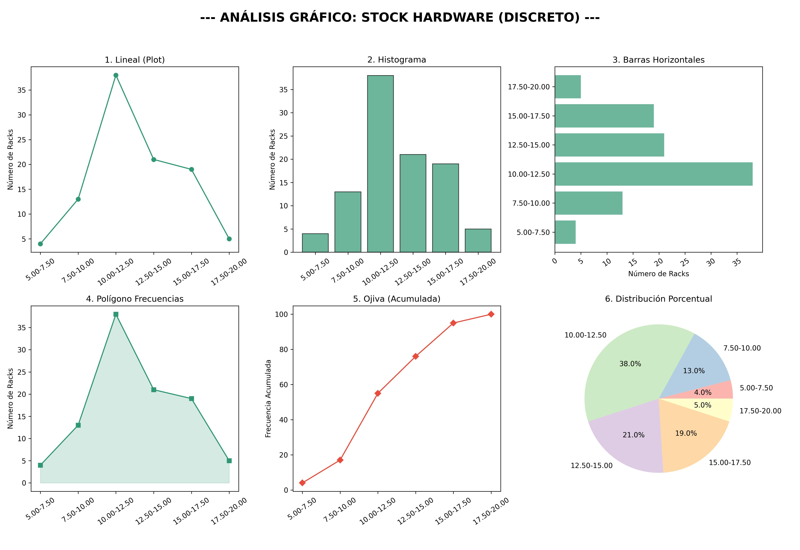
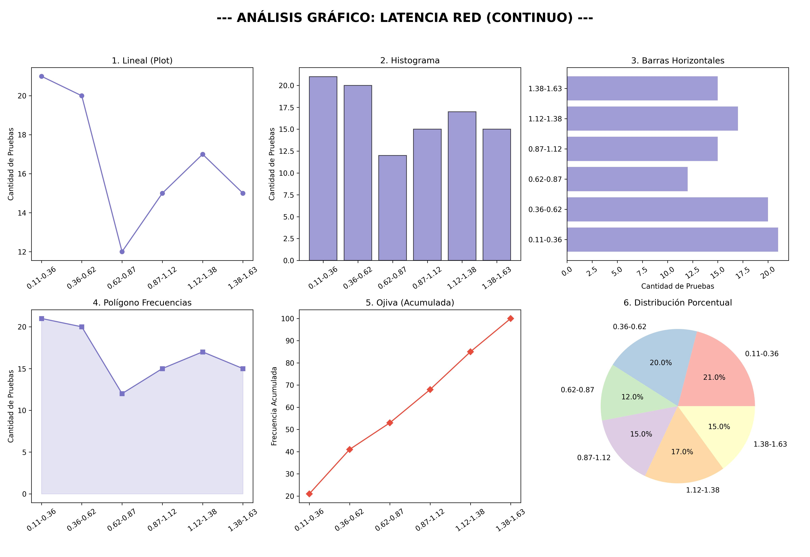
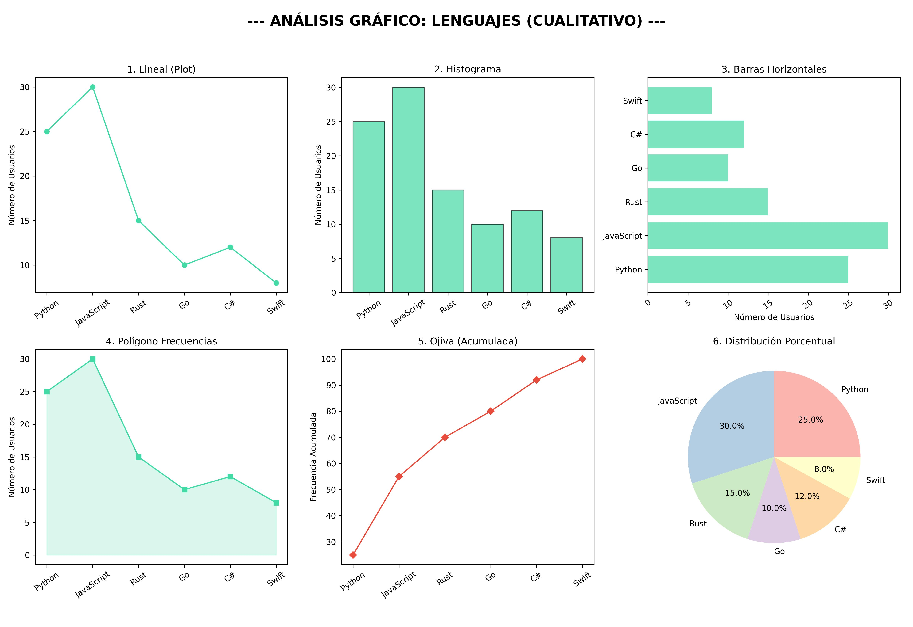

Dato Cuantitativo Discreto
Origen y Definición: Estos datos provienen de un proceso de conteo de elementos finitos...
| Clase |
Límite Inf. |
Límite Sup. |
Marca ($x_i$) |
$f_a$ (unidades) |
$f_r$ (%) |

Descripción del Gráfico: Este dashboard visualiza el conteo exacto de hardware. Al ser datos discretos, el histograma muestra barras separadas por valores enteros, permitiendo identificar rápidamente el stock más frecuente (moda) sin ambigüedades decimales.
Dato Cuantitativo Continuo
Origen y Definición: Se originan a través de la medición mediante instrumentos de precisión...
| Clase |
Límite Inf. |
Límite Sup. |
Marca ($x_i$) |
$f_a$ (registros) |
$f_r$ (%) |

Descripción del Gráfico: Aquí se observa la distribución de latencia. A diferencia del discreto, las barras del histograma representan rangos continuos. La Ojiva es especialmente útil aquí para determinar qué porcentaje de los procesos operan por debajo de un umbral de tiempo específico.
Dato Cualitativo
Origen y Definición: Estos datos no provienen de números, sino de la categorización...
| ID |
Atributo (Tecnología) |
Categoría |
$f_a$ (menciones) |
$f_r$ (%) |

Descripción del Gráfico: Esta visualización utiliza categorías de software. El Gráfico de Pastel y las Barras Horizontales son ideales aquí, ya que permiten comparar la popularidad de atributos (como lenguajes de programación) que no poseen una relación numérica intrínseca entre sí.